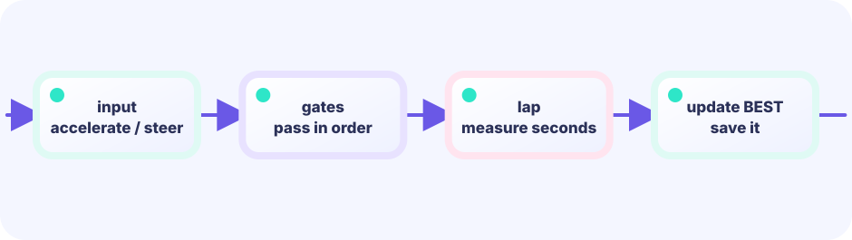

INPUT
Highlight only the next gate and count a lap only after every gate is crossed in order.
★★★☆☆ / PLAYABLE
Highlight only the next gate and count a lap only after every gate is crossed in order.
PLAY FIRST
Highlight only the next gate and count a lap only after every gate is crossed in order.

DEEP DIVE
Advance the index only when the touched gate matches next. Wrapping from the last index to zero completes one lap.
Highlight only the next gate and count a lap only after every gate is crossed in order.
Advance the index only when the touched gate matches next. Wrapping from the last index to zero completes one lap.
Compare time and racing line.
SYSTEM LAB
Advance the index only when the touched gate matches next. Wrapping from the last index to zero completes one lap.
START
THE UPDATE / DRAW BOUNDARY
Read keys and touch, then change positions, HP, gauges, timers, boards, and queues. Rules and decisions live here too.
input → rule → change gameRead the finished game state and place pictures, text, and effects. It never changes game state.
read game → project pixelsFor this lesson, put a new rule in Update (or a pure helper called by Update). Draw only shows the result of that rule.
GO + EBITENGINE
Highlight only the next gate and count a lap only after every gate is crossed in order.
if hit(gates[next]) {
next = (next+1)%len(gates)
if next==0 { lap++ }
}Advance the index only when the touched gate matches next. Wrapping from the last index to zero completes one lap.
Change one coefficient and compare feel.
Try it on another course.
FEEDBACK